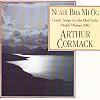

Celtic Lyrics Corner > Artists & Groups > Arthur Cormack > Nuair Bha Mi Òg > Ho Ro 'Illean Na Bithemaid Tursach
|  | Ho Ro 'Illean Na Bithemaid Tursach |
| Credits : | Neil Beaton; arranged by Arthur Cormack, Dougie Pincock & Robin Morton |
| Appears On : | Nuair Bha Mi Òg |
| Language : | Gàidhlig (Scottish Gaelic) |
| Lyrics : | English Translation : |
| Hòro 'illean, na bitheamaid tùrsach | Ho ro boys, let's not be sad |
| Olaidh sinn dileag a rithist as ùr dhith | We'll drink another measure |
| Fàgaidh i cridheil sinn 's bithidh sinn sunndach | It'll leave us hearty and happy |
| 'S cuiridh i 'n cùram uile fo sgòd | And it'll chase away all our cares |
| An deoch a ghabh mise an àm na Bliadhn' Uire | Word went far and wide across the land |
| Shiubhail i fad agus fàrsuing 'n an dùthaich | About the drink that I consumed at New Year |
| Chual iad an Stafan e 's thuirt iad le diùmb | They heard about it in Staffin and said without a doubt |
| Gur miosa na 'bhrùid am fear bhios ag òl | That a drinker is worse than an animal |
| Dh'òl mise barrachd 's a b'urrainn mi ghiùlain | I drank more than I could handle |
| Dh'fhàg siud me airnealach 's m' aisinean brùidhte | That left me sorrowful and with bruised ribs |
| Thug ise 'm laighe mi 's m' aithe 's mo lùths bhuam | It bowled me over and left me senseless and weak |
| 'S chàill mi mo chùrs mar neach ann an ceò | And I was lost like a man in the mist |
| 'S tric bhios mi 'g aithris gun sguir mi gun dàil | I often say that I will stop without delay |
| Nach ò me deur tuillidh, nach fhuiling mi 'm fàile | That I won't drink another drop and its smell will not entice me |
| Dh'aindeoin mo bhilean chan urrainn mi fàgail | In spite of what I say, I cannot leave it alone |
| Bidh i 'gam thàladh mar gum b'i ceòl | It entices me like music does |
| 'Nuair théid mi dhachaidh bidh 'bhean ann an gruaim rium | When I go home my wife is annoyed with me |
| Gheobh mi mo theist' nas gu dleasanda bhuaipe | I get my just desserts from her |
| "Ciamar, a bhurraidh, a chumas tu suas mi | "How can you keep me, you fool |
| Cosg do chuid duais an taighean an òil?" | When you spend all your pay in the bar?" |
| Feumaidh mi aithris, ged tha i 'na buaireadh | I must admit that it is tempting |
| Dh'aindeoin a mealladh tha iomadan buaidh innt' | That in spite of its enticing qualities it has many good points |
| Togaidh i aighear air fear a bhios gruamach | It will lighten the spirit of a down-hearted man |
| 'S bheir i air cuasach ribhinn còir | And it will make a sweetheart out of a decent girl |
| Fàgaidh i cridheil thu 's bithidh tu dàna | It will leave you hearty and you will be bold |
| Bheir i dhut misneachd 's cha chlisg thu le nàire | It will give you courage and will not let you down |
| Fògraidh i t'geal 's cha teich thu ro d'nàmhaid | You will have no fear and you will not run from your enemies |
| Bidh tu cho làidir 'nuair bhios tu 'g òl | You will be so strong when you are drinking |
| Hòro 'illean, na bitheamaid tùrsach | Ho ro boys, let's not be sad |
| Olaidh sinn dileag a rithist as ùr dhith | We'll drink another measure |
| Fàgaidh i cridheil sinn 's bithidh sinn sunndach | It'll leave us hearty and happy |
| 'S cuiridh i 'n cùram uile fo sgòd | And it'll chase away all our cares |